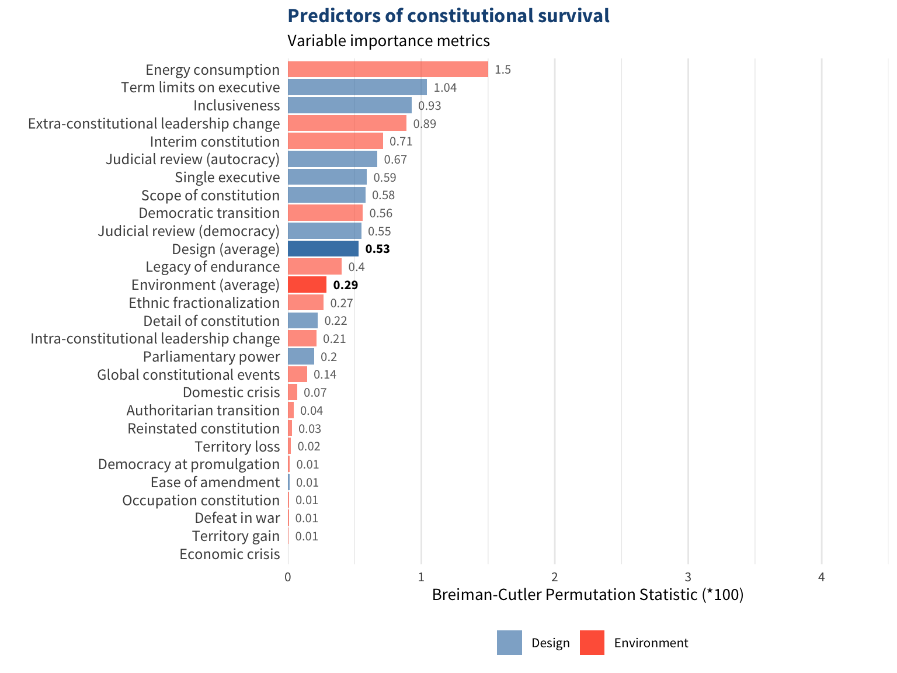
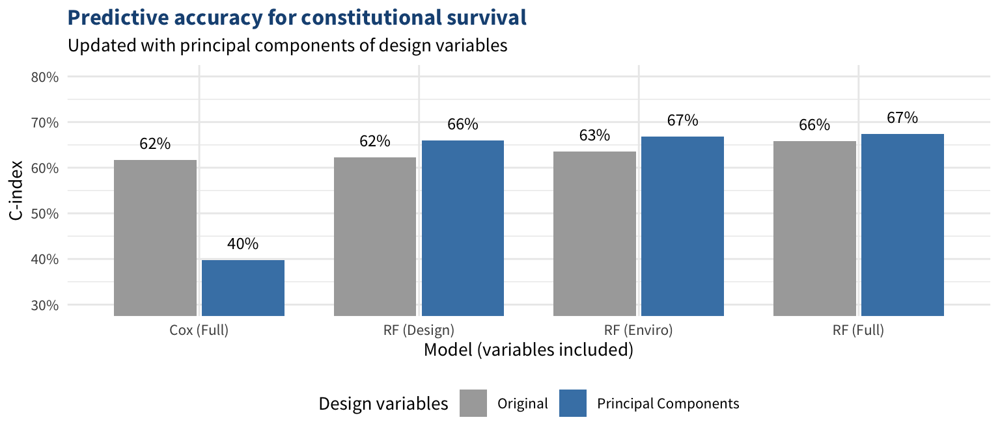
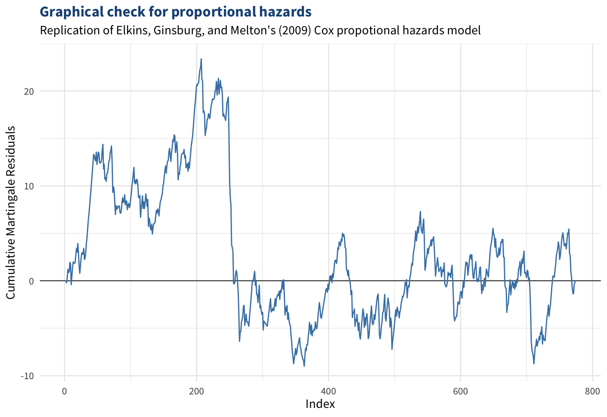

5 Tyranny of the Dead
The Risks of Entrenched Constitutions
A few days after the Senate began deliberating on a set of amendments that would become the Bill of Rights, Thomas Jefferson wrote a letter to James Madison arguing that the Constitution needed an expiration date. In his view, imposing an immortal constitution on future generations would impede on their right to self-govern. “The earth belongs always to the living generation,” he wrote. “The dead have neither powers nor rights” (1789a). If a majority of the people who instituted a constitution are no longer living, then it is no longer legitimate. Jefferson suggested that all constitutions and laws should expire after 19 years, a number he arrived at by calculating that half of all voting-age citizens at the time were expected to be dead within 19 years.
Jefferson forgot to mail the letter for several months. Regardless, it would not have made it to Madison in time for the final vote on the amendments because Jefferson was in Paris at the time.1 Madison (1790) found Jefferson’s general idea to be a “great one” but was skeptical that setting 19-year terms on constitutions would work in practice. Still, if Jefferson had been present at the Constitutional Convention or the debates over the Bill of Rights, perhaps a requirement for a convention to be held every two decades or so would have made it into the Constitution.2 History could have been very different, for better or worse.
Although Jefferson’s method and measure were peculiar, scholars in recent years have come to an eerie finding: the median lifespan of a national constitution, out of all constitutions in the world since 1789, happens to be 19 years (Elkins, Ginsburg, and Melton 2009). Was Jefferson onto something? Perhaps his ideal life expectancy matches actual life expectancies by mere coincidence, but his argument still raises some questions: do constitutions risk decaying beyond repair when they age past their prime? Or is endurance a sign that a constitution is resilient enough to withstand threats indefinitely into the future?
The United States is one of the only countries in the world that has kept the same core constitutional text for more than two centuries, and it is one of the only countries that has not amended its constitution in three decades. Even then, the most recent amendment, ratified in 1992, was minor and had an unusual journey (see the appendix below). The last significant change to the Constitution which followed a standard process was adopted in 1971. Half a century later, around 2016, the United States began falling into its sharpest episode of democratic backsliding in its history, according to most major democracy indices (Coppedge et al. 2021; Marshall 2020).
In this chapter, I argue that these trends are connected. Constitutions that are easier to amend or replace are stronger bulwarks against threats to democracy than rigid constitutions. First, Section 5.1 reviews the comparative politics literature to understand why the US Constitution has endured for more than two centuries with relatively few changes. In Section 5.2, I argue that less entrenched constitutions keep the public more engaged in politics, strengthen the polity’s reflexes against new forms of loopholes, and facilitate advancement away from old forms of oppression.
Next, Section 5.3 revisits Jefferson’s claim that 19 years is the optimal frequency for constitutional revisions. Jefferson argued that all constitutions should have 19-year term limits, assuming that 19 years is a universal estimate of the optimal lifespan of a constitution. I argue that constitutional life cycles are heterogeneous and cannot be evaluated around a single number, but they do follow predictable patterns based on their design and environment. I propose a more powerful, state-of-the-art alternative to Jefferson’s ideal constitutional lifespan: life expectancies computed by a supervised machine learning algorithm, tailored for each constitution based on its design, environment, and history.
I investigate theories of optimal constitutional lifespans by testing the effects of constitutional aging on political and economic outcomes. I hypothesize that democracy is likely to slip and income inequality is likely to rise when constitutions last longer than expected. The results do not provide evidence for these hypotheses, but they do offer ideas for how future work can explore these relationships more closely.
Appendix: The unusual journey of the 27th Amendment
The 27th Amendment prevents members of Congress from raising their own salaries for the current term. Congressional salary increases can now only go into effect after the next election. Without this provision, members of Congress could theoretically make themselves instant billionaires by allocating most of the federal budget to their own salaries (and overriding a presidential veto of the budget, unless the president is in on the scheme too). The public’s only recourse would be to vote these politicians out in the next election, after the deed is done. In practice, the danger of such a move is low considering that it did not happen in the entire 200-year span before the amendment was put in place. Thus, while the amendment is not a bad protection to have, it is relatively unimportant.
The amendment passed the first step toward adoption in 1789, when Congress approved it and 11 other amendments proposed by James Madison. Ten of those amendments went on to become the Bill of Rights, but two of them failed to garner enough support from the states. Two centuries later, an undergraduate student at UT Austin named Gregory Watson wrote a paper for a political science class where he argued that failed amendments like these could still be ratified at any time. Amendments passed by Congress do not expire if they fail to be ratified within a certain time period; they simply remain dormant. If new states are later admitted to the union, they could vote on dormant amendments from before they even existed. Nearly three-fourths of the current states were admitted since 1789—just shy of the threshold needed for an amendment to succeed—so an amendment passed by the first Congress could potentially be added to the Constitution even if only one state ratified it at the time.
Watson’s professor was skeptical and gave him a C, but legal scholars agreed with him. In the 1980s, he began convincing lawmakers to vote on one of the two long-lost amendments. The first of the two failed amendments from 1789 set a cap on the size of congressional districts to 50,000 constituents, which today would mean the House would have more than 6,000 representatives. This is probably why Watson focused on the second one, regarding congressional salaries. Because of his efforts, state legislatures slowly voted on the amendment until it was fully ratified in 1992. See Bernstein (1992) for a more detailed background of the 27th Amendment.
Around 35 years after Watson received a C on his paper, his former professor retroactively changed his grade to an A. Two heartwarming lessons can be gathered from this story. For students: if you don’t like a grade you received in college, all you have to do is organize a nationwide movement to pass a constitutional amendment based on an obscure legal theory you discovered while writing a term paper, and your GPA may bump up slightly by the time you retire. For educators: it’s never too late to change a student’s grade.
Appendix: What constitutes a constitution?
Although the term constitution can refer to political institutions in the abstract, here I use it to refer to written texts that serve as the foundation of a country’s political institutions. Constitutional texts take many forms around the world, everything from loose collections of laws and treaties to formal documents explicitly labeled constitutions.3 To account for this heterogeneity, Elkins, Ginsburg, and Melton (2009, 49) spell out a general definition that can apply to at least one text in most countries:
Constitutions consist of those documents that either: (1) are identified explicitly as the Constitution, Fundamental Law, or Basic Law of a country; OR (2) contain explicit provisions that establish the documents as the highest law, either through entrenchment or limits on future law; OR (3) define the basic pattern of authority by establishing or suspending an executive branch of government.
Furthermore, EGM do not consider constitutional amendments to be replacements. They only consider a constitution to be an altogether new constitution if it is revised outside of the normal amending procedures of the preceding constitution (55). For example, EGM mention that each of South Korea’s six republics effectively rewrote its constitution through formal amendment processes, which they code as a continuous constitution. This may not be appropriate for most constitutional research. Jefferson may be satisfied by South Korea’s constitutional turnover despite its constitution technically remaining in place. If the only continuity in the foundational document of a country is a single thread of formal amendment processes, then models are not fully capturing the variation across constitutions and are overestimating the variation within constitutions.
Even beyond amendments, a constitutional order can fundamentally shift over the course of a constitution’s lifetime. Ackerman (2000) argues that the US has effectively had three constitutions (not including the Articles of Confederation), with fundamental shifts after the Civil War and during the New Deal. The post–Civil War shift came with three transformative amendments, while the paradigm shift of the New Deal had no corresponding amendments.
More than a decade after publishing their seminal study on constitutional endurance, Elkins and Ginsburg (2021) step back from focusing on core constitutional texts as the unit of analysis and argue that the “small-c” constitution is more important than the formal document. Constitutions are only the surface of political environments, and they are too heterogeneous to show consistent patterns. Some cultures may prefer frequent constitutional turnover as insurance against legacies of oppression, while other cultures may prefer endurance as insurance against short-term whims. Scholars may need to reorient the scope of their theory and sample to particular types of constitutions at particular phases of their life cycles (Geddes 2003).
Even when patterns emerge, Elkins and Ginsburg are doubtful that constitutional texts have much of an effect on political outcomes. They argue that their work on the determinants of constitutional endurance still has causal validity because the variation in the types of constitutions around the world is precisely the variation that they sought to explain. It seems, then, that really the only universal conclusions scholars can draw about causal effects of constitutional design are how long the core texts last. But if the core texts do not matter, then the endurance of a constitution does not matter either. In the next section, I argue that constitutional endurance does matter to some degree, but not because of the text itself—rather, endurance shapes the political culture.
5.1 Why the Constitution has lasted so long
Most American theories on why the US Constitution is one of the longest-lasting constitutions in the world are not supported by comparative politics research. Some of the most commonly cited reasons are that the Constitution lays out a good model and its lack of a detail encourages more flexible institutions. However, most constitutions with the same model and level of detail are nowhere near as successful, and most successful constitutions have the opposite traits.
5.1.1 A solid design?
The popular belief is that the Constitution has endured because it lays out a good model of governance. As Chapter 3 shows, most countries that followed the American model are now either unstable and corrupt or they have shifted to a more parliamentary-style model. The US is the only country where a constitution has endured so long with a full presidential system with majoritarian elections. This does not rule out the possibility that the Constitution’s design is responsible for its success, but we would expect this model to have a better track record outside the US if it were true.
One could also argue that the design of a constitution does not matter at all; constitutions are merely reflections of their environments, and their survival depends more on social pressures that are far deeper than their political structures. EGM’s analysis suggests that variables that are endogenous to constitutions (features that the authors can control) generally have stronger effects on constitutional lifespans than exogenous variables (outside forces such as economic crises and international conflicts). This was not the central focus of their work, so I investigated this idea further in the appendix below.
Appendix: Details of the predictive analysis
Assessing the predictive power of constitutional design is an important step before moving on to an analysis of how constitutional age affects its performance. If the design of a constitution does not matter even for predicting its endurance, then it may not matter for predicting or explaining more complex phenomena such as democracy and inequality.
Shifting from a causal inference framework to a prediction framework is useful for a few reasons. As Shmueli (2010) notes, predictive modeling can be useful for theory development and providing a “reality check” on the accuracy of theories. Hence, this stage of the study is a practical opportunity to double check EGM’s findings that the text of a constitution can have a bigger impact on its survival than environmental factors. Second, constitutional design is itself a product of exogenous factors, and accounting for the full web of interconnected relationships among variables can be difficult if not impossible. Many of the issues that analysts must think through when constructing models for causal inference—variable selection, interactions, multicollinearity, heteroskedasticity, model efficiency, and bias reduction, to name a few—are less relevant for prediction (Shmueli 2010).
Third, while causal inference can help explain the past, prediction tools offer more insights for the future. In particular, machine learning algorithms can search for patterns that analysts might not have modeled on their own (Cranmer and Desmarais 2017). The tradeoff is that machine learning algorithms are less precise than regression models at estimating the effects of individual variables on the outcome. Luckily, this analysis is not seeking to find the effect of any single variable; it merely seeks to understand if one set of variables is more important than another set when projecting constitutional endurance, which is squarely in the domain of predictive algorithms.
To get a closer look at whether a constitution’s design or environment is a stronger predictor of its endurance, I replicated EGM’s model and then constructed similar models with random survival forests. Random forests, as originally developed by Breiman (2001), are a common machine learning algorithm, although they generally cannot handle right-censored data. Ishwaran et al. (2008) developed random survival forests to solve this problem, and they show that their random survival forests perform better than Cox hazard models in an epidemiological application. To my knowledge, random survival forests have not yet been applied in political science. These algorithms are useful for predicting how long things will last, which the next section uses, and also for assessing which variables are more important for making the prediction.
The random survival forests were run on a subset of the constitutions data (the training sample) and then were used to predict constitutional lifespans for the rest (the test sample). To compare the predictive importance of design and environmental variables, Breiman-Cutler permutation statistics estimate the importance of each variable in the training data. The average and total scores of design variables and environmental variables are then compared to see which set of variables tends to be more important. Higher scores for design variables would suggest that design variables are more important for predictive accuracy than environmental variables. The relative importance of each variable in the random survival forests is shown in the figure below. Higher scores indicate higher predictive value for constitutional survival. All scores are multiplied by 100.
Higher-scoring variables tend to be design variables, although both environmental and design variables seem to be important. On average, the 9 design variables were around 1.7 times as powerful as the 17 environmental variables. Summing the scores shows that the total variable importance of design variables is 4.8 compared to 4.89 for environmental variables. Collectively, the design variables have about as much predictive power as the environmental variables even though there are twice as many environmental variables. Design variables appear to be just as influential, if not more, for predicting constitutional lifespans. We know that constitutional design matters for constitutional endurance, but many of the features of the US Constitution’s design usually shorten constitutional lifespans in any other context.
Next, a series of random forests were run with various specifications of variables. The dataset includes 9 design variables and 17 environmental variables, so only the 9 most important environmental variables are used. One set of forests only includes design variables, the next one only includes environmental variables, and the final one includes all variables. If adding design variables minimizes error rates more than adding environmental variables, EGM’s finding would be corroborated.
The 9 design variables provide only a limited summary of each constitution’s design. To further investigate the predictive power of constitutional design, I ran random survival forests on a broader dataset of constitutional characteristics. The full dataset compiled by EGM for the Comparative Constitutions Project documents more than 600 variables, which comes out to 1,087 variables after recoding categorical variables as dummy variables. Many of these variables cover similar topics that are correlated with each other, so condensing the data is a prudent step for streamlining the computations of the random forests. To reduce the dimensions, I ran principal components analysis on the data. Due to the high dimensionality of the data, most of the variance is not able to be explained by just a few components. However, because I am not attempting to make inferences based on the principal components, I retain 25 dimensions, which account for around half of the variance in constitutional characteristics.
The figure below shows the error rates of these forests when the original 9 design variables are switched out for the 5 principal components calculated from the full constitutional characteristics data. In theory, the RF (Enviro) models should not be affected, so the differences are due to random error and are insignificant.

Here, the results show the opposite—models with environmental variables tend to perform slightly better, although not by much. Overall, we have mixed results regarding the predictive power of design variables relative to environmental variables. When controlling for environmental variables, EGM found that design variables have strong explanatory power, but environmental variables seem to have slightly more predictive power. This shows the importance of accounting for both design and environment when analyzing constitutions.
5.1.2 The lack of specificity and detail?
For two centuries, the consensus legal theory among legal and political scholars was that short, vague constitutions (like the US Constitution) are more durable than longer, more detailed constitutions (Hammons 1999), a theory typically attributed to James Madison. When constitutions provide less detail and merely lay out the basic institutional framework, the political system is more flexible and stable (Elazar 1985; Friedman 1988; Przeworski 1991). If a brief and vague provision needs to be updated, then political actors can simply reinterpret it rather than going through a tedious amendment process. The constitution can stand as a “living constitution,” a foundational document that leaves controversial issues to the legislative process and judicial review rather than codifying them as the law of the land. In short, brevity enables flexibility, and flexibility brings stability.
While the logic of the Madisonian theory is intuitive, the evidence has consistently shown the opposite: longer, more detailed constitutions last longer than brief constitutions. This was first observed by Hammons (1999) in the context of US state constitutions; by Negretto (2012) in the context of Latin American constitutions; and by Elkins, Ginsburg, and Melton (2009, hereafter “EGM”) in the global context with all national constitutions on record. Brief constitutions are often vague and can easily be interpreted different ways, which can fuel polarization and conflict. Courts usually hold the final say on what a constitution means, and they can easily be packed with judges who will interpret text in whichever way is the most favorable to the group in power. Constitutions with more detail bring a more universal understanding of the text says.
The US Constitution is an outlier: it is one of the briefest constitutions in the world, yet it is also the longest-lasting. It has had more detail than it seems, at least at times—it initially prohibited a ban on slavery, it briefly prohibited alcohol, and it has an unusually specific procedure for executive selection—but it is still one of the shortest and least specific constitutions on record.
5.1.3 The amendment process?
Another record the US Constitution holds is having one of the toughtest amendment processes in the world. In one study, Lutz (1994) measured the difficulty of amending 32 democracies’ constitutions based on the number of steps needed and the vote threshold needed at each step. The US Constitution’s amendment process has two steps, the first requiring a two-thirds vote (either an amendment is supported by two-thirds of Congress or it passes a convention that was called upon by two-thirds of the states) and the second requiring a three-fourths vote (three-fourths of state legislatures must ratify it). By Lutz’s measure, the Constitution was the most difficult one to amend in the sample, scoring just over twice as high as the average constitution. Likewise, Ginsburg and Melton (2015) find that the Constitution has changed at an extremely low rate, with only 0.02% of its provisions changing every 100 years.
It seems plausible, then, that the Constitution has lasted so long because it is not amended often. Once again, though, the opposite pattern has emerged around the world. EGM found that constitutions that are more easily amendable tend to endure longer than those that are not. A tough amendment process can build tensions as the constitution fails to adapt over time until replacing it altogether becomes easier than passing a whole series of overdue amendments. On the other hand, an easier amendment process encourages political actors to perform routine maintenance on the constitution so it can adapt to the changing world.
In the US, the Supreme Court has been unusually active at democratizing the constitutional system. Landmark decisions such as Brown v. Board expanded civil rights on a scale that most countries need amendments to achieve. But these advancements often came fairly late compared to most countries. The US used court decisions to catch up to social changes that an easier amendment process would have achieved earlier.
In a later study, Ginsburg and Melton (2015) argue that the culture of a constitution is a stronger factor in its amendment rate and endurance than its amendment process. Countries that take pride in their constitutions are less likely to change them, even if they need to. The US Constitution has lasted so long because Americans wanted it to. No other factor can explain the Constitution’s endurance as well as this simple fact. Its design, detail, and amendment process are usually weaknesses for most constitutions. Perhaps these features really are the reasons for the document’s success, and the US simply follows a different set of natural laws than the rest of the world. It is more likely that the Constitution has survived despite these features, not because of them.
5.2 How constitutional aging affects democracy
A long-lasting constitution can be desirable, but survival is not the end goal of a constitution; it is more of a means to an end. Throughout the preambles and purpose statements of constitutions, the closest goal to survival is stability (Elkins et al. 2014), although these are not the same. Survival often indicates stability, but it can also indicate impending instability. If the framework of a political system has flaws, then the survival of its constitution can come at the cost of stability. Autocratic regimes, for example, sometimes democratize and install a new constitution when public dissatisfaction with the status quo becomes dangerously high (Huntington 1991). In these moments, lengthening the lifespan of the constitution any more would become the cause of instability.
Constitutions are usually designed with many other goals in mind, such as security, state capacity, representativeness, economic prosperity, and civil liberties. The literature is rich with evidence that constitutional design affects these outcomes. Lederman, Loayza, and Soares (2005) find that parliamentary systems and states with strong protections for the freedom of the press have less corruption. Lijphart (1997) identifies many electoral rules that increase participation. Golder and Stramski (2010) find that systems with proportional representation are more representative of their constituencies than majoritarian systems. Likewise, Anderson and Guillory (1997) find that constituents are more satisfied with their government under proportional representation. Birchfield and Crepaz (1998) find that constitutions calibrated toward consensus democracy have lower levels of income inequality than those calibrated toward majoritarian democracy.
Perhaps the most critical outcome constitutions are geared toward is democracy. Specifically, constitutions are usually designed (in theory) to maintain the two primary dimensions of democracy identified by Dahl (1971): competition and participation. Around the world, democracy has been slipping since around 2005, marking the first global democratic recession since the World War II era (Institute 2021; Repucci and Slipowitz 2021). Unlike economic recessions, which are cyclical, predictable, and relatively short, democratic recessions are a new phenomenon that are much less understood. Political science does not yet have a consensus diagnosing the causes, a general theory explaining the processes universally, or a clear solution (Waldner and Lust 2018).
A wide range of theories have been offered: agency-based theories suggest power-hungry presidents and political actors are to blame (Mainwaring and Perez-Linan 2013); cultural theories focus on the effects of norms and civic engagement (Putnam and Leonardi 1993); institutionalists posit that certain types of electoral systems and party systems are more vulnerable (Reynolds 2010); political economists argue inequality and economic structures affect regime types (Boix 2003); social theories suggest ethnic divisions, class, and coalitions shape democratic outcomes (Rabushka and Shepsle 1972); and international relations theories highlight the influence of foreign actors Levitsky and Way (2006). The causes of democratic backsliding are likely heterogeneous around the world, so each of these six frameworks is relevant in some countries more than others. Waldner and Lust (2018, 107) point out that the “causes of vulnerability to backsliding may be distinct from the proximate causes of particular instantiations of backsliding.” Each of the factors theorized to contribute to backsliding may put countries at risk, but the specific force that ultimately triggers backsliding in a country may not be as easy to observe or explain systematically.
One undertheorized factor in this realm is constitutions, likely because of the problems discussed earlier. Additionally, the consequences of constitutions on democracy may be confounded by the forces that shape constitutions in the first place. Norms and culture, for example, have been found to have wide-ranging effects on unwritten constitutional practices, and thus on constitutional performance (Wiener 2008). Many scholars argue that the written constitution is merely a symbol, a reflection of political norms. Yet a constitution’s symbolic role is precisely where its effects may be found.
Constitutions are the most tangible symbols nations have for their political systems. Cultures can develop around them, especially around specific provisions. In the United States, for example, an entire subculture has developed against gun regulation, hailing the Second Amendment as its source of authority. The text of the provision matters less than its symbolism—the second word of the text is “well-regulated”—since its mere presence gives legitimacy to the movement. Perhaps if the Bill of Rights explicitly mentioned the right to vote, that same subculture might hold voting rights just as preciously. Constitutions serve as reference points on which the public views the political system at large.
When constitutions stagnate, the public is likely to view the unwritten constitution as stagnating as well. The symbol of the political system appears immutable and unshakeable, so the system itself must be. Nationwide cynicism over the political system can more easily flourish, and political participation decreases. This, in turn, signals to elites that they face lower costs for corruption, as the size of the selectorate decreases (De Mesquita et al. 2005). In contrast, when constitutions undergo revisions at a healthier pace, the prospect for change is within closer reach. Amendments allow the public to correct for loopholes where there is a disconnect between enumerated rules and contemporary norms, which raises the costs of corruption and violating norms even further for elites. This, in turn, prevents elites from passing policies that help them consolidate economic power as well.
5.3 Theories of the optimal constitutional lifespan
Is there a point when constitutions become too entrenched and outdated to perform adequately? In this section, I discuss several theories of when a constitution might meet an inflection point after which it struggles to maintain freedom and fairness. To investigate these theories empirically, we can explore whether democracy declines at predictable points in a constitution’s life cycle:
- Proposition 5.1: If political and economic indicators tend to downturn after constitutions survive past a certain age, whether it be a universal number or a more individualized number, then this figure is a useful estimate of a constitution’s optimal lifespan.
Jefferson proposed 19 years as an optimal lifespan for any constitution, but he based this figure on demography data from the eighteenth century. He also offered it as a universal figure for all constitutions.
5.3.1 Jefferson’s electorate half-life
Jefferson argued that a constitution loses its legitimacy after a majority of the electorate that instituted it has deceased. We can call this the electorate half-life. Jefferson calculated 19 years using life expectancies and mortality rates from the late 1700s. He seems to assume that these data were representative of all societies. This might have been a fair assumption at the time since even the best medical care was not much help, so there would have been very little inequality between rich and poor societies in terms life expectancy. Life expectancies and voting ages have changed since the eighteenth century and are more heterogeneous around the world. Replicating Jefferson’s method using more recent data suggests the electorate half-life for any US government action in 2023 is 31 years. In other words, if a new constitution or law were adopted today, a majority of the current electorate (which in theory is ultimately responsible for instituting it) would be deceased in just over three decades. By Jefferson’s argument, a legal measure passed in 2024 would lose its legitimacy by 2056.
If the electorate half-life of a constitution is meaningful, we would expect to see declines in political and economic indicators when it outlives this figure. Rather than calculating the electorate half-life for each individual constitution on record, I assessed whether these democracy and inequality changes after the 19-year and 31-year benchmarks for all constitutions:
Hypothesis 5.2a: After a constitution has been in use 19 years, democracy tends to decline and income inequality tends to rise.
Hypothesis 5.2b: After a constitution has been in use 31 years, democracy tends to decline and income inequality tends to rise.
I do not expect either of these hypotheses to be supported, but I am also not aware of any empirical studies directly testing implications of Jefferson’s theory.
Appendix: Calculating today’s electorate half-life
Jefferson used a mortality table from the Comte de Buffon, a French mathematician, but it is not clear what population these data represented. They could have been figures for the US, but they could have been figures from France. Jefferson calculated the electorate half-life from these data as follows:
Suppose a society in which 23,994 persons are born every year, & live to the ages stated in this table. The conditions of that society will be as follows. 1st. It will consist constantly of 617,703. persons of all ages. 2ly. Of those living at any one instant of time, one half will be dead in 24. years 8. months. 3dly. 10,675 will arrive every year at the age of 21. years complete. 4ly. It will constantly have 348,417 persons of all ages above 21. years. 5ly. And the half of those of 21. years & upwards living at any one instant of time will be dead in 18. years 8. months, or say 19. years as the nearest integral number. Then 19. years is the term beyond which neither the representatives of a nation, nor even the whole nation itself assembled, can validly extend a debt.
Let’s say there’s a country where 24,000 people are born per year, and they live their full life expectancy (as of the 1780s). Here’s what that would mean for this country. First, it will have a constant population of around 600,000. Second, half of the people living at any given time will be dead within 24 years and 8 months. Third, 10,000 people will turn 21 years old each year. Fourth, 350,000 will always be at least 21 years old. Fifth, half of those people will be dead within 18 years and 8 months, which we’ll round up to 19 years. This means that neither the government nor the public is responsible for anything that happened more than 19 years ago.
Jefferson used life expectancy figures for all adults who were at least 21 years old because that was most common voting age at the time. I lowered that to 18 for the calculation here. Jefferson’s method requires many assumptions—constant population, constant birth rate, and negligible immigration rates—but he intended for his calculation to be rough and hypothetical, not exact. The first four steps of Jefferson’s method are no longer needed due to more widely accessible data, so we can skip to the final step. How long can we expect half of all adults living right now to live?
I obtained an actuarial table from the Social Security Administration (2020), which separates out life expectancies for men and women at each age until 119. I averaged the life expectancies for all adult male Americans, weighting by population, and then did the same for adult female Americans. Assuming men and women are each half the population, I then averaged the two numbers together. This results in the average number of years that American adults are expected to have remaining. One final assumption we must make is that the average is roughly equal to the median. That would mean that the average life expectancy for all adults is the amount of time it will take for half of adults to die.
According to this method, half of American adults living today will be dead within 30.9 years, which can be rounded up to 31 years. This is 65% longer than it was in Jefferson’s time. If the voting age had stayed at 21, this number would be 29.5 or around 30 years, which is 58% longer than in Jefferson’s time. This means that 11% of the growth in the electorate half-life is due to lowering the voting age and 89% of the growth is due to longer life expectancies.
Code
# Load data and filter to adults
life = read.csv("data/ssa/actuarial.csv") %>%
filter(age >= 18)
# Average life expectancies, weighted by number of people at each age
avg_m = sum(life$life_exp_m * life$n_lives_m) / sum(life$n_lives_m)
avg_f = sum(life$life_exp_f * life$n_lives_f) / sum(life$n_lives_f)
# Average the M and F life expectancies
mean(avg_m, avg_f)5.3.2 Life expectancies from survival models
Each constitution and country is unique, so accounting for each constitution’s design, history, and environment can offer more detailed insights about how long a constitution can be expected to survive in good health. Perhaps a constitution’s life expectancy as predicted by these variables would be a stronger indicator of when a constitution will decline. I first replicated EGM’s models of constitutional survival to grab their life expectancy estimates and then used a more advanced prediction algorithm the next hypotheses:
Hypothesis 5.2c: After a constitution has outlived its life expectancy as predicted by a survival analysis model, democracy tends to decline and income inequality tends to rise.
Hypothesis 5.2d: After a constitution has outlived its life expectancy as predicted by random survival forests, democracy tends to decline and income inequality tends to rise.
The life expectancies estimated with these two methods and the actual ages of constitutions for 35 OECD nations are displayed below in Figure 5.2. Across the 169 current constitutions in the dataset, the average age as of 2024 is 48 years. The average life expectancy from both the random forests and the Cox models is 53 years. (This is significantly higher than EGM’s finding of 19 years as the median lifespan because their estimate included all constitutions on record, including short-lived ones that are no longer in operation.) Around 43% of current constitutions have outlived their life expectancy according to the random forests or 36% according to the Cox models. As expected, the random forests predictions are more accurate, with a C-index of 0.67 compared to 0.62 for the Cox models.
Code
#----- (1) PREPARE CONSTITUTIONAL SURVIVAL DATASET -----#
# Combine data [tidyverse]
surv = merge(enviro, const, by=c("code", "year")) %>% # merge data
select(const, code:year, age:failure, global_const:ecpc, legacy:era_late) %>%
arrange(const)
# Keep track of predictors and formula for imputation
surv_vars = paste(names(select(surv, global_const:era_late)), collapse=" + ")
surv_form = as.formula(paste("Surv(age, failure)", surv_vars, sep=" ~ "))
# Impute missing data [randomForestSRC]
set.seed(2000)
surv_imp = impute(surv_form, data=surv, # formula and data
nodesize = 1, nsplit = 10) # hyperparameters
# Load constitutional chronology data (CCP) [tidyverse]
changes = read.delim("data/ccp/ccpcce_v1_3.txt") %>%
select(code=cowcode, const=systid, year, evnttype) %>%
arrange(code, year)
# Load democracy data (V-Dem) and add constitutional events [vdemdata, tidyverse]
data(vdem) # load data from package
usdem = vdem %>%
select(code=COWcode, country_name, year, lib=v2x_libdem) %>%
arrange(code, year) %>%
merge(changes, by=c("code", "year"), all.x=TRUE) %>% # merge with const data
mutate(new = ifelse(evnttype=="new", 1, NA), # code events as dummies
amend = ifelse(evnttype=="amendment", 1, NA)) %>%
filter(code==2) %>% # filter to just the US
select(year, lib, new, amend)
#----- (2) COX MODEL -----#
# Prepare data [tidyverse]
surv_cox = surv_imp %>%
select(!const:year) %>% # remove ID cols
mutate(amend_rate2 = amend_rate^2) # square amendment rate
# Cox model [survival]
cox_full = coxph(Surv(age, failure) ~., surv_cox)
# Calculate residuals, predicted values, etc. [tidyverse]
cox_resid = surv_imp %>%
select(code, year, age, failure, detail) %>%
mutate(
pred = coxed(cox_full)$exp.dur[[1]], # expected durations
res2 = age - pred, # calculate residual
failure = ifelse(failure==0, "Current", "Retired"), # relabel
country = countrycode(code, "cown", "cowc"), # get country name
constid = paste0(country, " (", year, ")"), # country/year for labels
region = countrycode(code, "cown", "un.regionsub.code"), # get region code
west = (region %in% c(21, 154, 155, 39, 53)) # determine if western
)
#----- (3) DETERMINE 9 BEST ENVIRONMENTAL VARIABLES -----#
# Load variable information
vars = read.csv("data/ccp/variables.csv") %>% filter(!grepl("region", variable))
vars_enviro = vars$variable[vars$type=="enviro"]
# Set formulas for forests
y_s0 = "Surv(age, failure)"
y_b0 = "Surv(age, backslid)"
x_s0 = paste(vars$variable, collapse=" + ")
x_b0 = paste(filter(vars, bs)$variable, collapse=" + ")
form_s0 = as.formula(paste(y_s0, x_s0, sep=" ~ "))
form_b0 = as.formula(paste(y_b0, x_b0, sep=" ~ "))
# Train models [randomForestSRC]
set.seed(2000)
rf_s0 = rfsrc(form_s0, data=surv_imp)
rf_b0 = rfsrc(form_b0, data=bs_imp)
# Extract variable importance [randomForestSRC]
vimp_s0 = vimp(rf_s0)$importance
vimp_b0 = vimp(rf_b0)$importance
# Determine top environmental variables for survival [tidyverse]
vs0 = data.frame(variable=names(vimp_s0), vimp=vimp_s0*100) %>%
filter(variable %in% vars_enviro) %>%
arrange(-vimp)
# Determine top environmental variables for backsliding [tidyverse]
vb0 = data.frame(variable=names(vimp_b0), vimp=vimp_b0*100) %>%
filter(variable %in% vars_enviro) %>%
arrange(-vimp)
#----- (4) DEFINE MODEL SPECIFICATIONS -----#
# Save number of variables of each type
k_d = length(which(vars$type=="design"))
k_e = length(which(vars$type=="enviro"))
k = min(k_d, k_e)
# Define variables
vars_all = vars$variable
vars_design = vars$variable[vars$type=="design"]
vars_s_env = vs0$variable[1:k]
vars_b_env = vb0$variable[1:k]
vars_control = vars$variable[vars$type=="control"]
# Paste variables together for formulas
x_all = paste(vars_all, collapse=" + ")
x_design = paste(c(vars_design, vars_control), collapse=" + ")
x_s_env = paste(c(vars_s_env, vars_control), collapse=" + ")
x_b_env = paste(c(vars_b_env, vars_control), collapse=" + ")
y_surv = "Surv(age, failure)"
y_bs = "Surv(age, backslid)"
# Set formulas for models
form_surv = as.formula(paste(y_surv, x_all, sep=" ~ "))
form_surv_design = as.formula(paste(y_surv, x_design, sep=" ~ "))
form_surv_enviro = as.formula(paste(y_surv, x_s_env, sep=" ~ "))
form_bs = as.formula(paste(y_bs, x_all, sep=" ~ "))
form_bs_design = as.formula(paste(y_bs, x_design, sep=" ~ "))
form_bs_enviro = as.formula(paste(y_bs, x_b_env, sep=" ~ "))
#----- (5) RANDOM SURVIVAL FORESTS and COX MODELS -----#
# Sample indices to split data
n = nrow(surv_imp) # sample size
p = 0.7 # proportion to put in training data
set.seed(1500) # set seed for random sample
train = sample(n, p*n) # randomly select cases for training data
# Cox models [survival]
cox_surv = coxph(form_surv, surv_imp[train,], x=TRUE)
cox_bs = coxph(form_bs, bs_imp[train,], x=TRUE)
# Train random forests [randomForestSRC]
set.seed(2000)
rf_surv = rfsrc(form_surv, data=surv_imp[train,])
rf_surv_design = rfsrc(form_surv_design, data=surv_imp[train,])
rf_surv_enviro = rfsrc(form_surv_enviro, data=surv_imp[train,])
rf_bs = rfsrc(form_bs, data=bs_imp[train,])
rf_bs_design = rfsrc(form_bs_design, data=bs_imp[train,])
rf_bs_enviro = rfsrc(form_bs_enviro, data=bs_imp[train,])
#----- (6) MODEL PERFORMANCE METRICS with CROSS VALIDATION -----#
# Bootstrap cross-validation on constitutional survival models [pec]
c_surv = cindex(list(`Cox (Full)`=cox_surv, # list models
`RF (Full)`=rf_surv,
`RF (Design)`=rf_surv_design,
`RF (Enviro)`=rf_surv_enviro),
formula = Surv(age, failure)~1, # model form
data = surv_imp[-train,], # run on test data
splitMethod="BootCv", B=100) # bootstrapping specs
# Bootstrap cross-validation on democratic backsliding models [pec]
c_bs = cindex(list(`Cox (Full)`=cox_bs, # list models
`RF (Full)`=rf_bs,
`RF (Design)`=rf_bs_design,
`RF (Enviro)`=rf_bs_enviro),
formula = Surv(age, backslid)~1, # model form
data = bs_imp[-train,], # run on test data
splitMethod="BootCv", B=100) # bootstrapping specs
# Store c-indexes in dataframe [tidyverse]
perf = data.frame(model = names(unlist(c_surv$BootCvCindex)),
surv = unlist(c_surv$BootCvCindex),
bs = unlist(c_bs$BootCvCindex)) %>%
# Organize dataframe
pivot_longer(surv:bs, names_to="outcome", values_to="c") %>% # reshape
arrange(desc(outcome), c) %>% # order rows
mutate(outcome = factor(outcome, levels=unique(outcome)), # turn into factor
model = factor(model, levels=unique(model)), # turn into factor
order = row_number()) # keep track of order
#----- (7) COMPARE VARIABLE IMPORTANCE -----#
# Variable importance [randomForestSRC, tidyverse]
rf_surv_vimp = vimp(rf_surv)
surv_vimp = data.frame(variable=names(rf_surv_vimp$importance), # variable names
vimp=as.numeric(rf_surv_vimp$importance)*100) %>% # vimp scores
merge(vars, by="variable") %>% # merge with variable information
filter(type != "control") %>% # remove control variables
mutate(index = sapply(variable, grep, names(data))) %>%
# get the column number from data corresponding to variable
arrange(-vimp)
# Summary statistics for variable importance [tidyverse]
surv_vimp_sum = surv_vimp %>%
group_by(type) %>% # group by type (design/enviro)
summarise(sum = round(sum(vimp),2), # sum scores
avg = round(mean(vimp),2)) %>% # average scores
pivot_longer(sum:avg, names_to="variable", values_to="vimp") %>% # reshape data
mutate(name = c("Design (sum)", # add labels
"Design (average)",
"Environment (sum)",
"Environment (average)")) %>%
select(variable, vimp, name, type)
# Variable importance for graph [tidyverse]
surv_vimp2 = surv_vimp %>%
add_row(surv_vimp_sum) %>% # append summary statistics to importance data
filter(variable != "sum") %>% # remove sums
arrange(vimp) %>% # put rows in order
mutate(avg = (variable=="avg"), # indicator of summary statistic
name = factor(name, levels=name)) # make factor to retain order
#----- (8) LIFE EXPECTANCY DATA -----#
# Estimate life expectancies
lifeexps = surv_imp |>
mutate(rf_lifeexp = predict(rf_surv, surv_imp)$predicted,
cox_lifeexp = coxed(cox_full)$exp.dur[[1]]) |>
select(const, rf_lifeexp, cox_lifeexp)
# Add to constitutional characteristics data
const_exp = const |>
merge(lifeexps) |>
mutate(age = 2024 - year,
abb = countrycode(code, "cown", "iso3c"), .after=code,
rf_outlived = ifelse(age > rf_lifeexp, "Outlived life expectancy",
"Younger than life expectancy"),
cox_outlived = ifelse(age > cox_lifeexp, "Outlived life expectancy",
"Younger than life expectancy")) |>
group_by(abb) |>
filter(year==max(year))
# Collect statistics
x_age = round(mean(const_exp$age))
x_rf_exp = round(mean(const_exp$rf_lifeexp))
x_cox_exp = round(mean(const_exp$rf_lifeexp))
x_rf_outlived = round(mean(const_exp$age>const_exp$rf_lifeexp)*100)
x_cox_outlived = round(mean(const_exp$age>const_exp$cox_lifeexp)*100)
#----- (9) GRAPHS -----#
# OECD countries
oecd = read.csv("../apps/oecd/data/oecd.csv") |>
mutate(abb = countryname(country, "iso3c")) |>
select(abb, country, pop=pop2022)
# Prepare data for plotting
const_oecd = const_exp |>
filter(abb %in% oecd$abb) |>
distinct(const, code, .keep_all=TRUE) |>
merge(oecd)
# Random forest scatterplot
fig_rf_exp = highchart() %>%
hc_add_series(const_oecd, 'scatter', marker=list(symbol='circle'),
hcaes(x=age, y=rf_lifeexp, size=pop, group=rf_outlived)) %>%
# Labels and axes
hc_title(text = "Life expectancies from random forests") %>%
hc_tooltip(headerFormat=NULL, shared=TRUE, shadow=FALSE, borderRadius=0,
pointFormat=paste0(bullet, " <b>{point.country}</b> <br>",
"Current age: <b>{point.x}</b> <br>",
"Life expectancy: <b>{point.y:.0f}</b>")) |>
hc_yAxis(title = list(text = "Life expectancy")) %>%
hc_xAxis(title = list(text = "Actual age of constitution")) %>%
# Formatting
hc_add_theme(hc_theme(
chart = list(style = list(fontFamily = "Source Sans Pro"),
spacing=c(10,5,15,0)),
title = list(align="center", margin=30, style = list(
color = "#1b5283", fontWeight="bold", fontSize="19px", useHTML=TRUE))
)) |>
hc_colors(c("tomato", "steelblue"))
# Cox scatterplot
fig_cox_exp = highchart() %>%
hc_add_series(const_oecd, 'scatter', marker=list(symbol='circle'),
hcaes(x=age, y=cox_lifeexp, size=pop, group=cox_outlived)) %>%
# Labels and axes
hc_title(text = "Life expectancies from Cox models") %>%
hc_tooltip(headerFormat=NULL, shared=TRUE, shadow=FALSE, borderRadius=0,
pointFormat=paste0(bullet, " <b>{point.country}</b> <br>",
"Current age: <b>{point.x}</b> <br>",
"Life expectancy: <b>{point.y:.0f}</b>")) |>
hc_yAxis(title = list(text = "Life expectancy")) %>%
hc_xAxis(title = list(text = "Actual age of constitution")) %>%
# Formatting
hc_add_theme(hc_theme(
chart = list(style = list(fontFamily = "Source Sans Pro"),
spacing=c(10,5,15,0)),
title = list(align="center", margin=30, style = list(
color = "#1b5283", fontWeight="bold", fontSize="19px", useHTML=TRUE))
)) |>
hc_colors(c("tomato", "steelblue"))
Appendix: Variables and data sources
The data compiled by EGM in preparation for their book were obtained from the Comparative Constitutions Project (CCP, see Elkins, Ginsburg, and Melton 2005). It includes information on all known constitutions in the world since 1789; it has 1,048 constitutions across 216 countries. The replication data for their book only contains variables relating to the design of each constitution, as the environmental variables were obtained from outside sources. I compiled these data independently, sticking to EGM’s sources and measures as much as possible.
For some of the variables, I used different data from EGM because I could not access the dataset they used. For others, better data are now available since it has been 15 years since their book was published (and probably even more since they collected their data). For example, they use Fearon’s (2003) ethnic fractionalization index to measure ethnic diversity, but this index is time-invariant. Drazanova (2020) extends Fearon’s index and produces yearly data, so her data are used instead.
Four datasets come from the Correlates of War Project (COW): Territorial Change (Tir et al. 1998), Militarized Interstate Disputes (Palmer et al. 2022), Intra-State War Data (Dixon and Sarkees 2016), and National Material Capabilities (Singer, Bremer, and Stuckey 1972). Additionally, political regime data were obtained from the Polity Project (Marshall 2020), ethnic fractionalization data were obtained from Drazanova (2020), and leadership transition data were obtained from Goemans, Gleditsch, and Chiozza (2009). The appendix below shows the details of each variable.
The table below is modeled on Table 5.1 in EGM (2009) [pp. 95-96]. All variables from Legacy of endurance to Parliamentary power were taken exactly from EGM’s replication data via the CCP, and all others were obtained or calculated independently. Abbreviations: Comparative Constitutions Project (CCP); Correlates of War (COW); Elkins, Ginsburg and Melton (EGM).
| Category | Concept | Measure | Source |
|---|---|---|---|
| Environment | Global constitutional events | Number of new constitutions in the world in the prior year | CCP |
| Territory gain | Binary indicator of whether the state gained territory | COW | |
| Territory loss | Binary indicator of whether the state lost territory | COW | |
| Defeat in war | Binary indicator of whether state lost a major militarized interstate dispute | COW | |
| Domestic crisis | Binary indicator of whether the state experienced intrastate conflict | COW | |
| Economic crisis | Binary indicator of whether the state’s energy consumption per capita dropped by more than 10% annually | COW | |
| Democratic transition | Binary indicator of whether the state’s Polity score increased by at least 5 points in one year | Polity | |
| Authoritarian transition | Binary indicator of whether the state’s Polity score decreased by at least 5 points in one year | Polity | |
| Extra-constitutional leadership change | Binary indicator of whether an executive exited through irregular means | Archigos | |
| Intra-constitutional leadership change | Binary indicator of whether an executive exited through regular means | Archigos | |
| Democracy | Binary indicator of whether the state’s Polity score is at least 6 | Polity | |
| Ethnic heterogeneity | Ethnic fractionalization index | Drazanova | |
| Economic development | Energy consumption per capita | COW | |
| Legacy of endurance | Average lifespan of previous constitutions | CCP | |
| Interim constitution | Binary indicator of whether constitution is interim | CCP | |
| Reinstated constitution | Binary indicator of whether constitution was reinstated | CCP | |
| Design | Inclusiveness | “Additive index indicating the inclusiveness of the constitution-making process and constitutional provisions” (EGM) | CCP |
| Democratic at promulgation | Binary indicator of whether the state was democratic when constitution was instated | CCP | |
| Occupation constitution | Binary indicator of whether constitution was written “during or within two years of foreign military occupation” (EGM) | CCP | |
| Amendment rate | “Predicted probability of the promulgation of a constitutional amendment” (EGM) | CCP | |
| Judicial review | Binary indicator of whether “any court can review the constitutionality of laws” (EGM) | CCP | |
| Scope | “Percent of selected issues covered in the constitution” (EGM) | CCP | |
| Detail | “Words per issue covered in the constitution” (EGM) | CCP | |
| Single executive | Binary indicator of whether “the constitution calls for a single executive” (EGM) | CCP | |
| Parliamentary power | “De jure measure of Fish and Kroenig’s Parliamentary Power Index” (EGM) | CCP | |
| Control | Region | 7-level categorical variable indicating region | World Bank |
| Era | 3-level categorical variable indicating whether constitution was promulgated before 1914, between 1914 and 1945, or after 1945 | CCP |
Appendix: Methodological challenges with constitutional survival models
EGM employed a Cox proportional hazard model, a standard statistical technique for estimating the effects of various factors on how long something lasts. The figure below compares the errors of the predictions of the model based on my replication:
Code
#----- PLOT RESIDUALS -----#
# Scatterplot [highcharter]
highchart() %>%
hc_add_series(cox_resid, 'scatter', marker=list(symbol='circle'),
hcaes(x=age, y=res2, name="constid", group=factor(failure))) %>%
# Labels and axes
hc_title(text = paste("<b>Residuals from Constitutional Survival Model</b>"),
align = "left", margin=40,
style = list(color = "#1b5283", useHTML = TRUE, fontSize="19px")) %>%
hc_subtitle(text = paste("Replication of Elkins, Ginsburg, and Melton's (2009)",
"Cox propotional hazards model"),
align = "left",
style = list(color = "#black", useHTML = TRUE, fontSize="15px")) %>%
hc_yAxis(title = list(text = "Error (Actual - Predicted)")) %>%
hc_xAxis(title = list(text = "Actual Age of Constitution")) %>%
hc_tooltip(useHTML = TRUE, headerFormat = "<b>{point.key}</b><br>") %>%
# Format
hc_colors(c("gray", "steelblue")) %>%
hc_add_theme(hc_theme(chart = list(
style = list(fontFamily = "Source Sans Pro"))))While not a standard diagnostic plot for this type of model, this plot reveals two challenges for modeling constitutional survival. First, the model is significantly more accurate for Western democracies than for the rest of the world, probably because the US holds disproportionate influence in the theory development and the model calculations. The fact that the model’s prediction for the US Constitution’s lifespan almost exactly matches its current age despite most other long-lasting constitutions being underestimated may indicate that the model is calibrated too heavily with US-oriented interpretations of constitutions and the determinants of their survival.
Second, errors are not random, and the model systematically underestimates survival of older constitutions. This is likely due in part to nonproportional hazards: for a Cox model to fit data approporiately, the effect of each variable must not change over time, or else it may bias the results (Box-Steffensmeier and Zorn 2001). EGM note that hazards of many covariates—including specificity of the constitution—are not proportional over time, although they report that correcting for this did not change the results (128). However, this does not indicate the nonproportionality can be ignored; rather, more advanced techniques are needed (Licht 2011). In the case of constitutions, nonproportionality may be exacerbated by correlations among constitutions within the same country (as Box–Steffensmeier and Zorn (2002) point out), separate processes for short-lived constitutions (Alt, King, and Signorino 2001), or some combination of these phenomena. Figure @ref(fig:cox-ph) indicates that nonproportional hazards are present and influencing the model, as the cumulative sum of martingale residuals should fluctuate continuously around the \(x\)-axis (Xue and Schifano 2017).

These challenges are far from fatal to studies of constitutional design. On the contrary, they show that EGM’s pioneering work on this area is only the beginning. The paradoxes among the hypotheses, general results, and specific predictions for the US can still be explained. The literature is full of suggestions for how scholars can approach time-to-event data with the properties described here. Importantly, the presence of nonproportionality, repeated events, and separate data generation processes have implications for both theory development and methodological choices. I begin with theory development, and methodological considerations will be discussed in the Data and Methods section.
Appendix: Replication of Elkins, Ginsburg, and Melton (2009)
EGM model constitutional survival with Cox proportional hazard models. Cox models are a common technique for survival analysis, otherwise known as event history modeling or duration modeling. The main advantage of survival analysis is that it accounts for right-censoring, which is when the event of interest has not yet occurred for a particular observation. In the context of constitutional survival, all current constitutions are right-censored; they could be replaced next year, or they could last for centuries. Excluding these cases or marking their duration as their current age can bias regression models (Box-Steffensmeier and Jones 2004). Survival analysis circumvents this problem by modeling conditional probabilities of survival at any given age rather than lifespans. I replicated EGM’s model as closely as possible using a standard Cox model. There are a few discrepancies in the direction and significance of some variables’ effects due to slightly different data sources, but the overall conclusions are consistent.
This table summarizes the effects of select variables on constitutional life expectancy from EGM’s Cox model and my Cox model. Relevant variables that were significant in at least one of the studies are included. Region variables were omitted as they were not categorized consistently. “Longer” indicates that the variable has a hazard ratio under 1 and thus increases life expectancy relative to the reference category, while “Shorter” indicates the variable has a hazard ratio above 1 and thus decreases life expectancy relative to the reference category. Asterisks indicate statistical significance.
Code
# Load data
load("data/ccp/all-data.Rdata")
load("data/ccp/const.Rdata")
load("data/ccp/enviro.Rdata")
load("data/ccp/cnc.Rdata")
load("data/ccp/sr.Rdata")
load('data/ccp/errs.Rdata')
# Save number of variables of each type
k_d = length(which(vars$type=="design"))
k_e = length(which(vars$type=="enviro"))
k = min(k_d, k_e)
# Combine data [tidyverse]
surv = merge(enviro, const, by=c("code", "year")) %>% # merge data
select(const, code:year, age:failure, global_const:ecpc, legacy:era_late) %>%
arrange(const)
# Keep track of predictors and formula for imputation
surv_vars = paste(names(select(surv, global_const:era_late)), collapse=" + ")
surv_form = as.formula(paste("Surv(age, failure)", surv_vars, sep=" ~ "))
# Impute missing data [randomForestSRC]
set.seed(2000)
surv_imp = impute(surv_form, data=surv, # formula and data
nodesize = 1, nsplit = 10) # hyperparameters
# Load constitutional chronology data (CCP) [tidyverse]
changes = read.delim("data/ccp/ccpcce_v1_3.txt") %>%
select(code=cowcode, const=systid, year, evnttype) %>%
arrange(code, year)
# Load democracy data (V-Dem) and add constitutional events [vdemdata, tidyverse]
data(vdem) # load data from package
usdem = vdem %>%
select(code=COWcode, country_name, year, lib=v2x_libdem) %>%
arrange(code, year) %>%
merge(changes, by=c("code", "year"), all.x=TRUE) %>% # merge with const data
mutate(new = ifelse(evnttype=="new", 1, NA), # code events as dummies
amend = ifelse(evnttype=="amendment", 1, NA)) %>%
filter(code==2) %>% # filter to just the US
select(year, lib, new, amend)
#----- (2) COX MODEL -----#
# Prepare data [tidyverse]
surv_cox = surv_imp %>%
select(!const:year) %>% # remove ID cols
mutate(amend_rate2 = amend_rate^2) # square amendment rate
# Cox model [survival]
cox_full = coxph(Surv(age, failure) ~., surv_cox)| Variable | EGM (2009) | Morse (2024) |
|---|---|---|
| Global constitutional events | Shorter* | Shorter |
| Domestic crisis | Shorter* | Longer |
| Economic crisis | Shorter | Longer* |
| Democratic transition | Shorter* | Longer* |
| Authoritarian transition | Shorter* | Shorter |
| Extra-constitutional leadership change | Shorter* | Shorter* |
| Democracy | Longer | Longer* |
| Legacy of endurance | Longer* | Longer* |
| Interim constitution | Shorter* | Shorter* |
| Inclusiveness | Longer* | Longer* |
| Amendment rate | Longer* | Longer* |
| Scope | Longer | Longer* |
| Detail | Longer* | Longer* |
| Single executive | Longer | Shorter |
| Executive term limits | Longer* | Longer* |
| Parliamentary | No effect | Longer |
5.4 Analysis
Are the electorate half-life figures and constitutional life expectancies actually meaningful? The final stage of this analysis adds these figures to models of democracy and inequality. Specifically, I employ fixed effects panel models with several common controls regressed on V-Dem’s liberal democracy index and the income share of the top 1% in the country of each constitution. Because the analysis is at the constitution level rather than country level, there could be some correlations among constitutions from the same country, which could lead to underestimates of errors. Future research could use more advanced techniques to better account for the correlation structure.
For each dependent variable, I estimated five models. The main independent variable for the first two is an indicator of whether a constitution has outlived its life expectancy predicted by random survival forests and Cox models. The next two models employ indicators of whether a constitution has outlived its electorate half-life using Jefferson’s 19-year cutoff and more modern 31-year cutoff. The final models include the raw age of each constitution. The age models may be more powerful since they use a continuous rather than binary variable, but they cannot say anything about the effects of outliving the life expectancies in particular.
Control variables for all models, which were taken from the same data sources as the survival models, are: the number of veto players, population, ethnic diversity (ethnic fractionalization index), conflict (indicator of whether the state experienced domestic conflict), GDP per capita, and public health (life expectancy for the population). The democracy models include income inequality as a control while the income inequality models include democracy as a control. Finally, the models include a one-year lag of the dependent variable to account for autocorrelation over time. I experimented with additional lags of up to four years, but only the first one was needed.
5.4.1 Results
The models of democracy and inequality are displayed as coefficient plots in Figure 5.3. The lagged dependent variables were omitted from the coefficient plots because their coefficient estimates were significantly larger than any of the other variables, which is to be expected. The table in the appendix below the plots shows more detail about the lagged variables’ effects and overall model fit. The income inequality models only explain around half as much variance as the democracy models explain, likely because I selected variables based on democracy and used the same ones for income inequality rather than starting the model selection process from scratch.
Code
#----- Setup -----#
# Add life expectancies to constitutional chronology data
chron2 = chron |>
merge(lifeexps, all.x=TRUE) |>
arrange(const, year) |>
group_by(const) |>
mutate(rf_outlived = age > rf_lifeexp,
cox_outlived = age > cox_lifeexp,
abb = countrycode(code, "cown", "iso3c")) |>
ungroup() |>
select(const, abb, year, age, rf_outlived, cox_outlived)
#----- Country-level data ----#
vp = veto |>
# Select variables
select(abb, country_name, year, pop,
libdem, civil, corrupt, fragility, econ, top1,
nparties, checks, conflict, gdppc, lifeexp, pop,
ethnic, system) |>
# Fix data
mutate(checks = ifelse(checks<0, NA, checks),
system = as.factor(system)) |>
# Remove duplicate country-years
group_by(abb, year) |>
filter(row_number() == 1) |>
ungroup() |>
# Remove countries without much data
#group_by(abb) |>
#mutate(start = min(year)) |>
#ungroup() |>
#filter(start<2001, year>=2000, year<2020) |>
# Make dummy variables
dummy_cols(c("system"), remove_most_frequent_dummy=TRUE) |>
rename(system2=`system_President-parliamentary`,
system3=`system_Premier-presidential`, system4=`system_Parliamentary`) |>
# Impute missing data
mice(printFlag=FALSE) |> complete()
#----- Constitution-level data -----#
library(plm)
consts = chron2 |>
merge(vp) |>
mutate(over19 = (age>19),
over31 = (age>31), .after=age) |>
mutate(parliamentary = (system=="Parliamentary"),
top1b = top1,
libdemb = libdem) |>
distinct(const, year, .keep_all=TRUE) |>
filter(!is.na(const), !is.na(year)) |>
pdata.frame(index=c("const", "year"))
# Rescale data for standardized coefficients
consts_std = consts |>
mutate(across(c(pop:ethnic, top1b, libdemb, age), ~as.numeric(scale(.x))))
# Function for fitting panel models
fit_mod = function(data, xvar, yvar) {
left = paste(yvar, "~")
lag_y = paste0("lag(", yvar, ")")
control = ifelse(yvar=="libdem", "top1b", "libdemb")
right = paste(lag_y, xvar, "checks", "pop", "ethnic", "conflict", "gdppc", "lifeexp",
control, sep=" + ")
form = as.formula(paste(left, right))
plm(form, data=data, model="within")
}
# Fit models
rf_dem_raw = fit_mod(consts, "rf_outlived", "libdem")
cox_dem_raw = fit_mod(consts, "cox_outlived", "libdem")
over19_dem_raw = fit_mod(consts, "over19", "libdem")
over31_dem_raw = fit_mod(consts, "over31", "libdem")
age_dem_raw = fit_mod(consts, "age", "libdem")
rf_ineq_raw = fit_mod(consts, "rf_outlived", "top1")
cox_ineq_raw = fit_mod(consts, "cox_outlived", "top1")
over19_ineq_raw = fit_mod(consts, "over19", "top1")
over31_ineq_raw = fit_mod(consts, "over31", "top1")
age_ineq_raw = fit_mod(consts, "age", "top1")
# Fit models with standardized coefficients
rf_dem_std = fit_mod(consts_std, "rf_outlived", "libdem")
cox_dem_std = fit_mod(consts_std, "cox_outlived", "libdem")
over19_dem_std = fit_mod(consts_std, "over19", "libdem")
over31_dem_std = fit_mod(consts_std, "over31", "libdem")
age_dem_std = fit_mod(consts_std, "age", "libdem")
rf_ineq_std = fit_mod(consts_std, "rf_outlived", "top1")
cox_ineq_std = fit_mod(consts_std, "cox_outlived", "top1")
over19_ineq_std = fit_mod(consts_std, "over19", "top1")
over31_ineq_std = fit_mod(consts_std, "over31", "top1")
age_ineq_std = fit_mod(consts_std, "age", "top1")
# Variable information
key = read.csv("data/formgov.csv")
outcomes = key |>
filter(type=="outcome") |>
select(outcome=variable, outcome_name=concept)
predictors = key |>
filter(type=="predictor") |>
mutate(i = row_number()) |>
select(variable, i)
#----- Function for extracting coefficients -----#
constmod = function(mod1, mod2) {
# Get coefficients in original scale
mod1_coefs = summary(mod1)$coefficients |>
as.data.frame() |>
rownames_to_column("variable") |>
select(variable, est_orig=Estimate, se_orig=`Std. Error`)
# Get standardized coefficients
coefs = summary(mod2)$coefficients |>
as.data.frame() |>
rownames_to_column("variable") |>
select(variable, est=Estimate, se=`Std. Error`, t=`t-value`) |>
# Merge original coefficients and variable names
merge(mod1_coefs) |>
merge(key) |>
merge(predictors) |>
arrange(i) |>
# Compute confidence intervals
mutate(ci_lower = est - se*1.96,
ci_upper = est + se*1.96,
concept2 = row_number()) |>
filter(!grepl("y_", variable))
# Return coefficient table
return(coefs)
}
# Extract results
rf_dem_est = constmod(rf_dem_raw, rf_dem_std)
cox_dem_est = constmod(cox_dem_raw, cox_dem_std)
over19_dem_est = constmod(over19_dem_raw, over19_dem_std)
over31_dem_est = constmod(over31_dem_raw, over31_dem_std)
age_dem_est = constmod(age_dem_raw, age_dem_std)
rf_ineq_est = constmod(rf_ineq_raw, rf_ineq_std)
cox_ineq_est = constmod(cox_ineq_raw, cox_ineq_std)
over19_ineq_est = constmod(over19_ineq_raw, over19_ineq_std)
over31_ineq_est = constmod(over31_ineq_raw, over31_ineq_std)
age_ineq_est = constmod(age_ineq_raw, age_ineq_std)
# Put data together
dem_mods = bind_rows(rf_outlived=rf_dem_est, cox_outlived=cox_dem_est, over19=over19_dem_est,
over31=over31_dem_est, age=age_dem_est, .id="predictor")
ineq_mods = bind_rows(rf_outlived=rf_ineq_est, cox_outlived=cox_ineq_est, over19=over19_ineq_est,
over31=over31_ineq_est, age=age_ineq_est, .id="predictor")
mods = bind_rows(libdem=dem_mods, top1=ineq_mods, .id="outcome") |>
merge(outcomes) |>
mutate(sig = case_when(
(ci_lower < 0) & (ci_upper < 0) ~ "Decreases",
(ci_lower > 0) & (ci_upper > 0) ~ "Increases",
TRUE ~ "No effect on"),
result = paste(sig, tolower(outcome_name))) |>
arrange(outcome, predictor, i)
#----- Interactive figure -----#
coef_plot = function(data, x_var) {
# Update data
data = filter(data, predictor==x_var)
# Create plot
highchart() |>
# Error bars
hc_add_series(
data, hcaes(x=concept2, low=ci_lower, high=ci_upper, group=outcome),
type="columnrange", opacity=.5, grouping=FALSE, linkedTo="estimates",
enableMouseTracking=FALSE, showInLegend=FALSE,
) |>
# Bubbles
hc_add_series(
data, hcaes(x=concept2, y=est, group=outcome),
type="scatter", id="estimates",
tooltip=list(headerFormat=NULL, pointFormat=paste(
bullet, "<b>{point.measure}</b><br>", "{point.result}<br>",
"Standardized coefficient: <b>{point.est:.2f}</b><br>",
"Coefficient on original scale: <b>{point.est_orig:.2f}</b><br>"
))
) |>
# Titles
hc_title(text=paste("Determinants of democracy and inequality")) |>
hc_subtitle(text=paste("Fixed effects panel models")) |>
hc_xAxis(title=list(enabled=FALSE), crosshair=FALSE,
labels=list(style=list(fontSize="1.1em")),
categories=c(NA, unique(data$concept))) |>
hc_yAxis(title=list(text=paste("Estimated effect (standardized)")),
plotLines=list(list(width=2, value=0))) |>
# Formatting
hc_chart(inverted=TRUE) |>
hc_morse(scatter=TRUE) |>
hc_colors(c("#1450A3", "forestgreen")) |>
hc_legend(enabled=FALSE) |>
hc_exporting(enabled=TRUE, filename="forms-gov", sourceWidth=750)
}Predictor
Appendix: Regression tables
Democracy models
| Dependent variable: | ||||
| V-Dem’s liberal democracy index | ||||
| Life expectancy (RFs) | Life expectancy (Cox models) | Over 19 years | Over 31 years | |
| (1) | (2) | (3) | (4) | |
| Democracy (t-1) | 0.862*** | 0.860*** | 0.853*** | 0.852*** |
| (0.006) | (0.007) | (0.006) | (0.006) | |
| Outlived RF prediction | 0.004** | |||
| (0.002) | ||||
| Outlived Cox prediction | 0.006*** | |||
| (0.002) | ||||
| Over 19 | -0.001 | |||
| (0.001) | ||||
| Over 31 | 0.002 | |||
| (0.001) | ||||
| Veto players | 0.002*** | 0.002*** | 0.002*** | 0.002*** |
| (0.0004) | (0.0004) | (0.0004) | (0.0004) | |
| Population | -0.00000*** | -0.00000*** | -0.00000*** | -0.00000*** |
| (0.00000) | (0.00000) | (0.00000) | (0.00000) | |
| Ethnic diversity | -0.012* | -0.011* | -0.005 | -0.005 |
| (0.007) | (0.007) | (0.005) | (0.005) | |
| Conflict | -0.004*** | -0.004*** | -0.005*** | -0.005*** |
| (0.001) | (0.001) | (0.001) | (0.001) | |
| GDP per capita | 0.00005 | 0.0001 | 0.0001 | 0.0001 |
| (0.0001) | (0.0001) | (0.0001) | (0.0001) | |
| Public health | 0.0001 | 0.00003 | 0.0003** | 0.0002 |
| (0.0002) | (0.0002) | (0.0002) | (0.0002) | |
| Income inequality | -0.0002 | -0.0002 | -0.0001 | -0.0001 |
| (0.0001) | (0.0001) | (0.0001) | (0.0001) | |
| Observations | 4,969 | 4,969 | 5,766 | 5,766 |
| R2 | 0.831 | 0.831 | 0.817 | 0.817 |
| Adjusted R2 | 0.821 | 0.821 | 0.806 | 0.806 |
| F Statistic | 2,565.956*** (df = 9; 4705) | 2,568.520*** (df = 9; 4705) | 2,694.406*** (df = 9; 5423) | 2,694.937*** (df = 9; 5423) |
| Note: | p<0.1; p<0.05; p<0.01 | |||
Inequality models
| Dependent variable: | ||||
| Income share of the top 1% | ||||
| Life expectancy (RFs) | Life expectancy (Cox models) | Over 19 years | Over 31 years | |
| (1) | (2) | (3) | (4) | |
| Inequality (t-1) | 0.611*** | 0.610*** | 0.630*** | 0.628*** |
| (0.011) | (0.011) | (0.010) | (0.010) | |
| Outlived RF prediction | -0.046 | |||
| (0.136) | ||||
| Outlived Cox prediction | -0.197 | |||
| (0.156) | ||||
| Over 19 | -0.134 | |||
| (0.096) | ||||
| Over 31 | -0.411*** | |||
| (0.119) | ||||
| Veto players | -0.002 | -0.004 | -0.001 | 0.003 |
| (0.030) | (0.030) | (0.029) | (0.029) | |
| Population | 0.0001*** | 0.0001*** | 0.0001*** | 0.0001*** |
| (0.00001) | (0.00001) | (0.00002) | (0.00002) | |
| Ethnic diversity | 1.240** | 1.232** | 1.429*** | 1.493*** |
| (0.519) | (0.518) | (0.444) | (0.444) | |
| Conflict | 0.100 | 0.099 | 0.107 | 0.111 |
| (0.110) | (0.109) | (0.106) | (0.106) | |
| GDP per capita | 0.013** | 0.012** | 0.005 | 0.008 |
| (0.006) | (0.006) | (0.006) | (0.006) | |
| Public health | -0.051*** | -0.048*** | -0.025* | -0.021* |
| (0.013) | (0.013) | (0.013) | (0.012) | |
| Democracy | -1.650*** | -1.555*** | -1.511*** | -1.371*** |
| (0.521) | (0.527) | (0.524) | (0.525) | |
| Observations | 4,969 | 4,969 | 5,766 | 5,766 |
| R2 | 0.451 | 0.451 | 0.453 | 0.454 |
| Adjusted R2 | 0.420 | 0.420 | 0.419 | 0.420 |
| F Statistic | 429.410*** (df = 9; 4705) | 429.711*** (df = 9; 4705) | 499.292*** (df = 9; 5423) | 501.300*** (df = 9; 5423) |
| Note: | p<0.1; p<0.05; p<0.01 | |||
If the hypotheses are supported, the first variable in each coefficient plot would show a negative effect on democracy (blue error bars completely to the left of the vertical line) and a positive effect on income inequality (green error bars completely to the right of the vertical line). However, across all the models, the effect of the independent variable is either not statistically significant or in the opposite direction as hypothesized. The life expectancies from the Cox models are the only thresholds with significant effects on democracy, but they suggest that democracy improves after a constitution has outlived its life expectancy. Similarly, all models except for the ones with life expectancies projected by random forests suggest that older constitutions tend to have lower levels of income inequality. This casts doubt on the proposition that electorate half-lives and constitutional life expectancies are meaningful.
5.4.2 Discussion
This chapter shows that the design of a constitution is important for understanding how long it will last, but the analyses do not uncover any evidence that long-lasting constitutions present dangers to political and economic environments. Several possibilities could explain these results:
Constitutional life expectancies and electorate half-lives are not reliable indicators of optimal lifespans. As with human life expectancies, a constitution’s predicted lifespan is not necessarily an indicator of how long it should survive. The models used to estimate life expectancies may be oversaturated since they were trained on many of the constitutions whose lifespans they seek to predict. The two electorate half-life figures may also have low construct validity. Perhaps more fine-tuned estimates of electorate half-lives that are time-variant and calculated for each country would return clearer results.
Amendments may have similar effects as new constitutions. In countries where amendments are rare, a single amendment—even one that seems to be of little consequence—may be enough to refresh public engagement with the political system. In countries where frequent amendments are commonplace, a new constitution may be needed to activate the same response. Modeling the amendment rate of a constitution could help explain processes such as democratic backsliding more than its survival.
The models employed in this analysis are not adequate. The dataset used in the models of democracy and inequality only goes back to 1920 due to limited data for control variables. Some constitutions (including the US Constitution) outlived their life expectancy before this date, so these cases had no variation on the key independent variable. Collecting more data, adding more control variables, including lags of control variables, and accounting for more advanced correlation structures could produce different results.
The effects of constitutions on democracy and inequality cannot be studied quantitatively. Although the dataset has hundreds of constitutions, they may be too heterogeneous and unique to provide meaningful results in a quantitative study. A more qualitative approach focused on individual cases may be needed to understand a constitution’s life cycle.
A constitution’s endurance beyond expectations could help, not hurt, its constituents. Jefferson’s fear that a constitution with an indefinite timeline could lead to corruption may not have been warranted. A long-lasting constitution can bring stability and prosperity. The US Constitution might not be responsible for the challenges American democracy is facing.
It is unlikely that constitutional survival has no effect on democracy and inequality, but we still do not know exactly how these processes would work. The age and rigidity of the US Constitution may not be posing as grave of a danger on its own as theorized in this chapter. Nevertheless, the US would still benefit from reevaluating parts of the Constitution and keeping a healthier pace of reform. Even if the Constitution is not the problem, it could be part of the solution.
Jefferson wrote the original letter shortly before leaving Paris, where he had been a diplomat for several years. He didn’t have a chance to send it in Paris, so he brought it home with him. He once again forgot to give it to Madison when they hung out at Jefferson’s estate. He finally mailed the letter to Madison and reported that he saw “no occasion to alter my mind” after pondering it for several months (1789b). If he had sent the letter when he wrote it, perhaps the Bill of Rights would have included an amendment requiring that a constitutional convention be held every two decades.↩︎
Jefferson was also in Paris during the Constitutional Convention and only influenced the document indirectly through his correspondence with Madison. An expiration date for the Constitution does not appear to have been brought up in any debates at the Constitutional Convention or writings of the founders aside from Jefferson and Madison’s correspondence. The idea might not have even occurred to anyone else since they were already deep in uncharted territory.↩︎
For example, New Zealand technically has no formal constitution, but the Treaty of Waitangi is considered its foundational document. This agreement laid out the terms for relations between the indigenous Māori population and British settlers while also establishing universal rights for all residents. The treaty functions more like a bill of rights than a traditional constitution since the institutional structure and other provisions are left to laws such as the Legislature Act 1908.↩︎